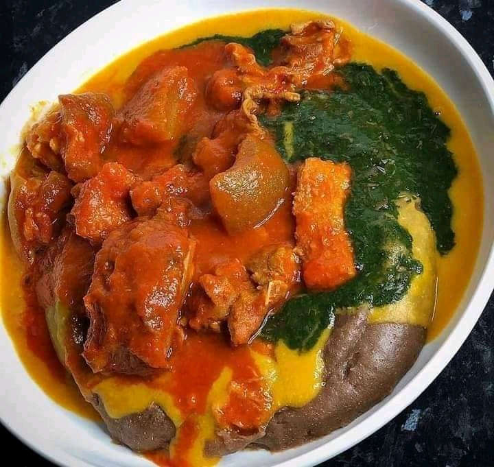
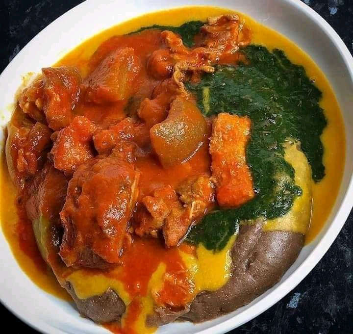

About Us
Amala Ibadan is a restaurant that brings the rich culinary heritage of Ibadan to life. We specialize in serving traditional Yoruba meals, with Amala as our star dish. Using the finest ingredients and authentic recipes passed down through generations, we ensure every meal delivers an unforgettable taste of Ibadan.
Our passion for food and our deep connection to Yoruba culture inspire everything we do. We invite you to experience the warmth and flavors of Ibadan, right here at our restaurant.


 
